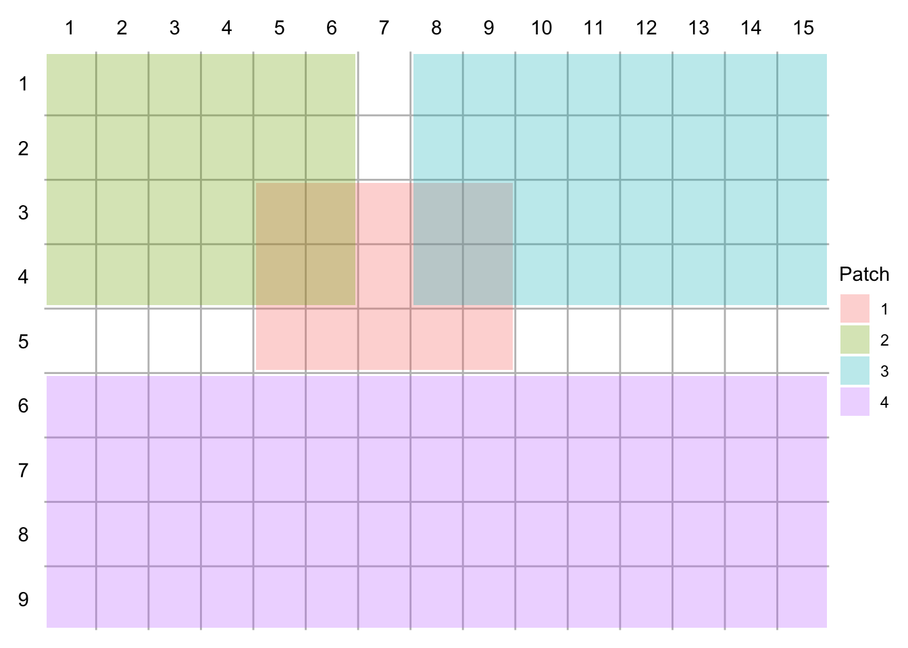
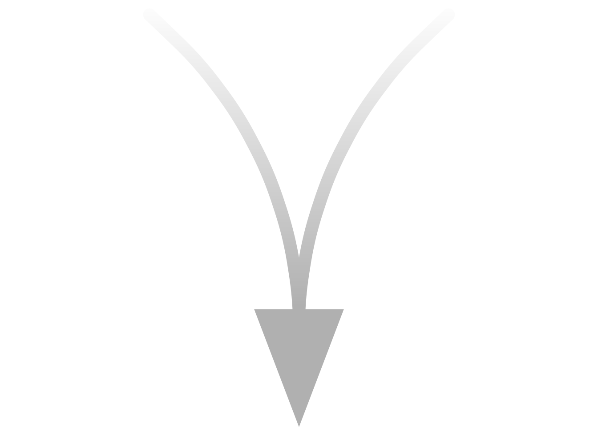
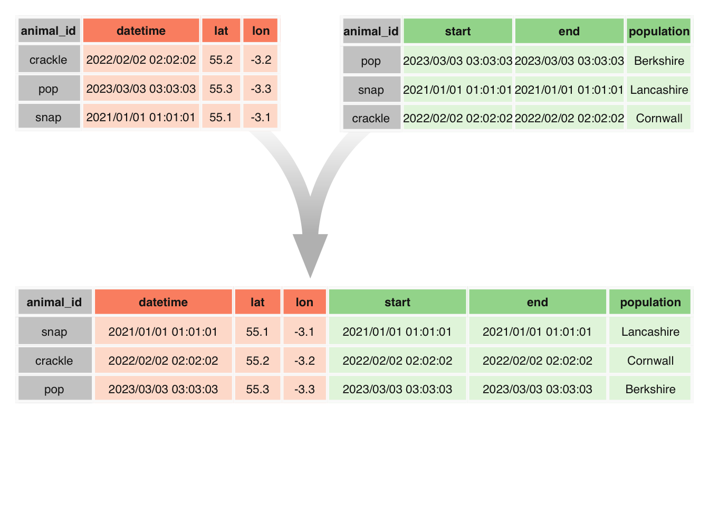

MS_figures
Figure 1
%%{init:{'flowchart':{'nodeSpacing': 5, 'rankSpacing': 30}}}%%
flowchart LR
subgraph ALL [" "]
style ALL fill:none,stroke:none
S1[Read in data] ==> S3{Merge}
S2[Read in metadata] ==> S3 ==> A(Process) ==> B(Filter) ==> C(Save)
A --> A1((Shiny app)) --> B
B --->|"<br/> Summarise/<br/>Visualise"|C
B --> B1((Shiny app)) --> C
end
C --> D
C --> C1((Shiny app))
C ==> S{Analyses}
subgraph OPTIONAL ["OPTIONAL"]
style OPTIONAL fill:#fbfbfb, stroke:#999, stroke-width:px, stroke-dasharray:5 5
D(Post-process) --> E(Save)
C1 --> D
D --->|"<br/> Summarise/<br/>Visualise"|E
end
E --> S
linkStyle 0,1,2,3,4,12 stroke-width:5px %% stroke:#00dca5 (this bit is how you edit colours of lines — no way to change colour of arrow heads)
%% NOTE: remember to update links for finalised user guide!!
Figure 1: Diagram of workflow used for analysing movement data (thick line denotes core path of workflow)
Figure 2
Done but I think it could be better — does it need extra rows and maybe some missing values? Shorter datetime/lat-lon? Arrows instead of +/=? headers for ‘data’, ‘metadata’ and ‘combined’?



pacman::p_load(tidyverse, ggpattern)
#original arrow plot code
merge <- ggplot() +
geom_curve(aes(x = 1, y = 2, xend = 2, yend = 0.8),
colour = "grey", curvature = -.25, linewidth = 5, lineend = "round") + #leftline
geom_curve(aes(x = 3, y = 2, xend = 2, yend = 0.8),
colour = "grey", curvature = .25, linewidth = 5, lineend = "round") + #rightline
geom_polygon(data = tibble(x = c(2, 1.7, 2.3), y = c(0.6, 1, 1)), aes(x = x, y = y), fill ="grey") + #arrow
geom_rect_pattern(aes(xmin=0, ymin=1, xmax=4, ymax=2.05), #box
pattern_fill = "#ffffff00",
pattern_fill2 = "white",
pattern_orientation = "vertical",
pattern = 'gradient',
fill = NA) +
theme_void() + coord_cartesian(expand = FALSE)
merge#ggsave(plot = merge, filename = "Figure_2.tiff",
# #device = device,
# path = here("Manuscript","Figure Images"),
# units = "mm", width = 200, height = 125, dpi = 300,
#)